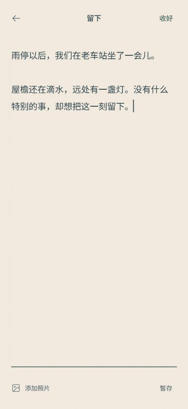
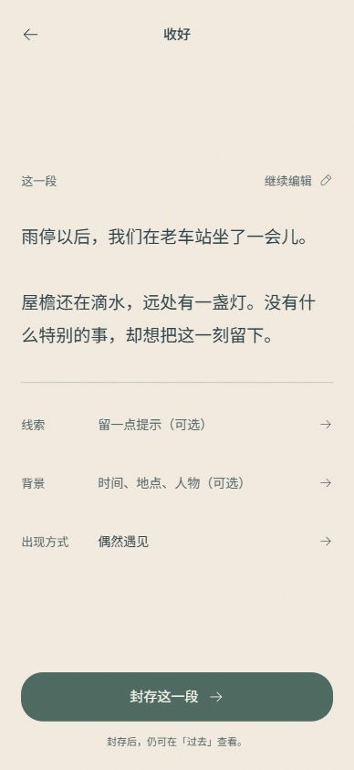
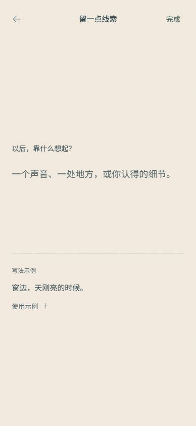
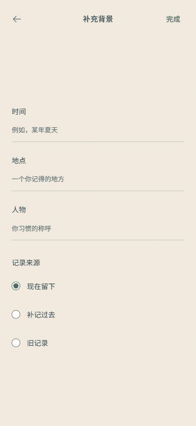
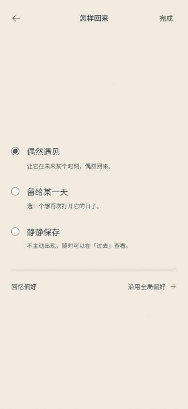

写下，然后轻轻收好。
默认路径：写下 → 收好 → 封存。其余信息按需进入独立页面。居中内容轴、透明输入区、克制提示；保留原日夜底色、嵌入字体和纸船洋流。

01 写下
把空间留给内容；照片与暂存在底部。不展示流程条。
02 收好
原文优先，可直接编辑；线索、背景和出现方式是可选调整。
可选 · 线索
一个输入区。示例不是 AI 建议，未采用不保存，可清除或跳过。
可选 · 背景
时间、地点、人物归在一起。不要求填完，也不读取设备位置。
可选 · 出现方式
三种方式一次只选一个。只有指定日期时显示日期，偏好独立进入。上述为浏览器实际截图，示例文案仅用于检查。本轮是 Web UI 候选：草稿和照片刷新后清空，AI、真实提醒与 V3 算法未接入。已检查多种容器、130% 文字与有限高度；不代表真机或最终视觉验收。